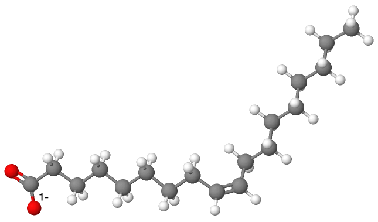

Caractère amphiphile des savons et solubilité dans l’eau
Les savons sont des sels alcalins d’acides gras de formule semi-développée $\ce{R-CO2^- (aq) + Na^+ (aq)}$ ou $\ce{R-CO2^- (aq) + K^+ (aq)}$ au sein desquels
$ce{R}$ est une longue chaîne carbonée.
Par exemple, le savon de Marseille a pour formule $\ce{CH3-(CH2)7-CH=CH-(CH2)7-CO2^- (aq) + Na^+ (aq)}$, l’ion oléate $\ce{CH3-(CH2)7-CH=CH-(CH2)7-CO2^- (aq)}$ ayant pour structure spatiale :

Les savons sont donc composés : − d’une partie hydrophile polaire, appelée la « tête »; − d’une partie hydrophobe apolaire, appelée la « queue ». On dit qu’ils sont « amphiphiles ».
[Lire]
 L’ion carboxylate, contrairement à l’acide carboxylique formé lors de l’hydrolyse avec de l’eau, est sans effet sur l’alcool de sorte que la réaction inverse d’estérification n’a pas lieu.Une application de l’hydrolyse basique est l’obtention de savons. En effet, les réactions de saponification ne sont autres que des réactions d’hydrolyse basique à partir de corps gras qui sont des triesters de glycérol.
L’ion carboxylate, contrairement à l’acide carboxylique formé lors de l’hydrolyse avec de l’eau, est sans effet sur l’alcool de sorte que la réaction inverse d’estérification n’a pas lieu.Une application de l’hydrolyse basique est l’obtention de savons. En effet, les réactions de saponification ne sont autres que des réactions d’hydrolyse basique à partir de corps gras qui sont des triesters de glycérol.